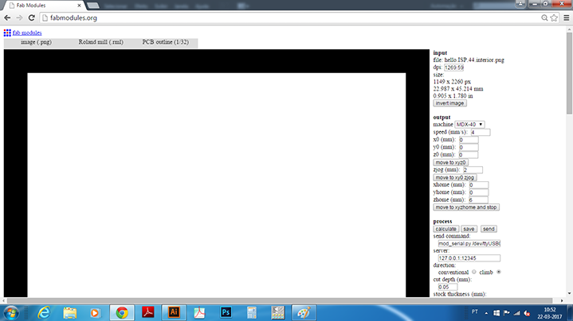
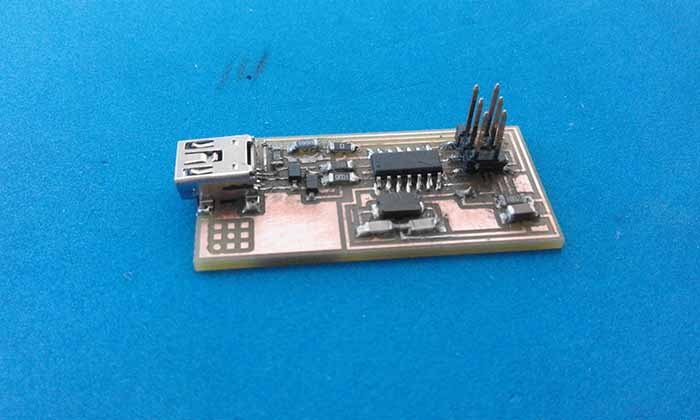
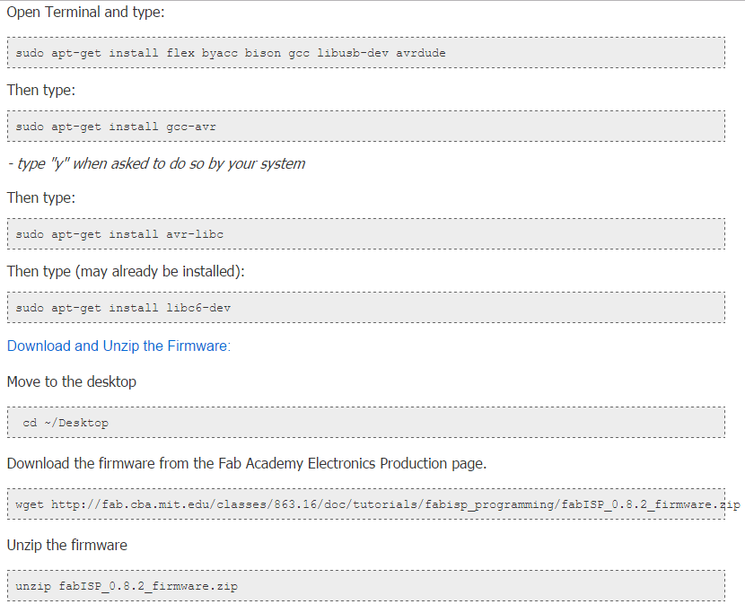
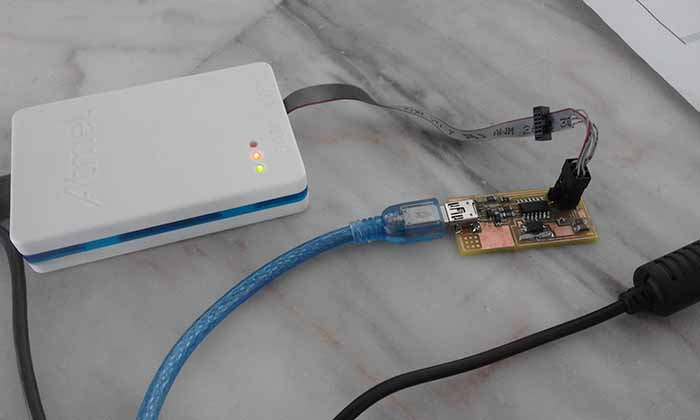
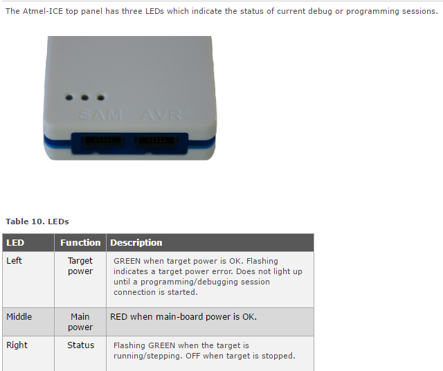
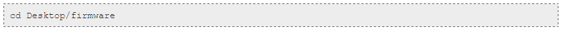
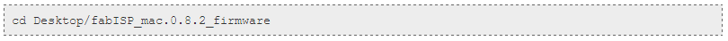
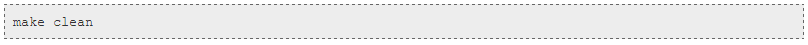
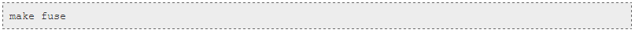
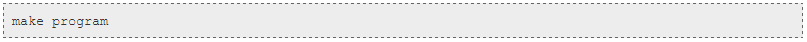

Week no. 4
Electronics Production :
-
Make an in-circuit programmer by milling the PCB
-
Optionally, trying other processes.
Milling the PCB
To iniciate my week's work I started by reading this tutorial and downloaded the board files.
Then i imported the png. image of the FabISP traces to the Fab Modules, selected the output: Roland mill (.rml); and the process: PCB traces (1/64).
After that i changed some values like:
- Output: Machine: MDX40A
- cut depth (mm): to 0,05mm;
- tool diameter (mm): 0,25 mm
- number of offsets (-1 to fill): 4
- offset overlap (%): 50%
Then i pushed the button calculate to see the perview of the traces and downloaded de .rlm file with the G code.

After i downloaded the .rml file, i opened the V-Panel of the machine (Roland MDX40) and set the origin of the x,y a z axis and started milling.
Next what i did was import the .rml file generated by the fab modules and proced to the cut.
The board cut out was in the same three steps, but this time using the process PCB outline (1/32). Changed:
- cut depth (mm): to 0,25mm;
- tool diameter (mm): 0,8 mm.

And started the cut:
Stufing
After the milling of the Fab ISP was done its time to solder the components to the board.
First i did a list with the components,quantities and their position on the board with a panel of pre-spacing tape to help me pick
the components and downloaded the Hello ISP 44 schematic and some photos to set as an example.

Then i starded solder the components to the board using a soldering iron and solder.
It was my first time doing this, so it's not perfect, i need to practice more.

Testing
For this part i did a "smoke test" and a continuity check:
Troubleshooting Short Circuits:
Programing
To program my board i followed this tutorial with Ubuntu:
Get and install avrdude / GCC software and dependencies:

Power the FabISP Board

Programmer Light Indicator Messages:

Edit the Makefile

A window will open containing the Makefile. Go to the line that says:
#AVRDUDE = avrdude -c usbtiny -p $(DEVICE) # edit this line for your programmer
AVRDUDE = avrdude -c avrisp2 -P usb -p $(DEVICE) # edit this line for your programmer
- If using the USBtiny programmer or another FabISP
- Remove the "#" in front of the line with "usbtiny" in it
- Add a "#" to beginning the line with the "avrisp2" in it to comment it out.
- save the Makefile
Program the FabISP




Next, we need to set the fuses so your board will use the external clock (crystal). Type:

Next we want to program the board to be an ISP.
Then type:
